Marbling Your Ceramics
One of the recent fads that has hit the art scene is marbling. While marbling has an extensive history, has reappeared in painting, papercraft, textiles, and ceramics. Artists have been using marble to sculpt for thousands of years and can be traced back to ancient Mesopotamia, Egypt, and Greece (Shovava &Comma 2019). Though it wasn’t until the 10th century in Japan that the origin of marbling began with paper marbling, Suminagashi. Since then, it has evolved into a various patterns and techniques on a multitude of different art media, including ceramics. Marbling ceramics can be achieved in three distinct methods: as a clay body, through slip decoration, and through glazing. As I explore the history of marbling and its impact on the ceramic world, I will experiment with the ceramic techniques and challenges each pose.
Marbling began in Japan around the 10th century in the form of Suminagashi, or “floating ink”. Artists would add drops of black and indigo blue ink to water, the blow gently on the surface to create the smoky pattern. Paper was laid on top to imprint the pattern and left to dry. Later on, in the 15th century, Turkey and Persia created their form of marbling called Ebru, “cloud art”. Their methodology consisted of oil paints and gouaches instead of inks. To keep the heavier paints from sinking, a thickening agent called size was added to water, which allowed the paints to stay on the surface and gave the artist more control in creating patterns. Once the paint was settled on the water surface, a feather, comb or stylus was used to created intricate patterns that would then be transferred to paper. Marbling paper finally appeared in Europe during the 17thcentury when travelers to the Middle East collected the highly stylized papers and bound them into alba amicorum , “books of friendship”, the predecessor to autograph books. As popularity grew for marbled paper, Renaissance scientists began publishing accounts of marblers’ techniques and tools which was widely disseminated throughout the rest of Europe. In the 19th century it became a popular handicraft after being published in Charles Woolnough’s The Art of Marbling (1853) (“History of Suminagashi and Marbling”).
During this paper marble craze is when marbling first begins to appear on ceramic vessels in Europe as a clay body, inspired by 8th century T’ang dynasty wares. The earliest documented thrown agateware was found among the products of John Dwight, the father of English pottery. His research of clay bodies for agateware included notes on shrinkage rates, body compatibility and colors, firing temperatures, densities, plasticity, elasticity and strength. Laid agateware was introduced commercially in the early 1700s by Dr. Thomas Wedgwood with varicolored clays in marbled effect created in press molds. By the 1740s potter Thomas Whieldon improved on Wedgwood’s methodology by using white clay stained with metallic oxides. Towards the latter half of the 18th century, the hype of agateware began to die out, but sporadically popped up in other pottery centers in the 19th century. American agateware technology made its appearance in mid-17thcentury at a tobacco pipe kiln in Maryland, but the best-known examples came from the U.S. Pottery Co. in the mid-19th century called “scroddled ware” This was a cheap way of producing pottery which refers to ware that has been created out of scraps of various clays combined to form striations in the clay body or the addition of iron slag into clay body to create the striations. Agateware makes a brief reappearance in American art during the Arts and Crafts Movement of the 1900s. The Niloak Pottery Co. in Arkansas created the “Mission Swirl” line of pottery made from three different local clays (cream, brown, and grey) and three colored clays (red, white, and blue). The clays were then press molded giving their shape (Ceramics in America).
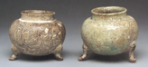
8th Century T’ang Dynasty
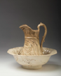
“Scroddled Ware”, U.S. Pottery Co., mid 19th Century
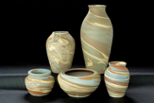
“Mission Swirl”, Niloak Pottery Co., Arts and Crafts Movement
While the history of agateware is extensive, there is little documentation on the history of marbling as a surface adornment. The difference between the three methods of marbling is: colorant in clay body (agateware), surface color from slips, and surface color from glaze. As I explored each type of marbling, I found that each technique varies in difficult, with agateware being the easiest and glazing being the most difficult.
Marbling Clay
To preface this marbling option, it does take a significant amount of mason stain to color a white clay body. The Vanadium color I chose made the clay body look slightly discolored (even after 100g), so I added in an additional 50g of Titanium Yellow. Also, be sure to use the same body as a mix of bodies could create issues during firing especially if fired at different temperatures.
- · Helmer Porcelain (made from large batch)
- Helmer 100 lbs
- Custer Feldspar 50 lbs
- Roseville 15 lbs
- Flint 25 lbs
- Combine dry mix. Add 500g of water and blend.
- Remove 1/3 of mix. This will be for the stained portion of the body.
- a. To note: you can remove more but you want the ratio to be less than 1:1 between the bodies to create a good marble pattern.
- Add stain to 1/3 mix to desired color. Colorants may stain, be sure to wear proper protection.
- Dry both mixes separately until plastic.
- Wedge both bodies separately. Remove portions of stained body and add to unstained body.
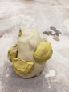
- Wedge bodies together about 5-10 times. Do not over wedge as colors will become blended and not marbled.
- Throw form on wheel. Allow to dry to leather hard (for trimming and color reveal). Initially your form will look muddied on the surface with no actual marbling, but after trimming off the surface layer you will reveal the marbling underneath.
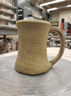
In hindsight, I think using a more vibrant color other than yellow would have been a better option for a clay body. The marbling is still present but is subtle.
Marbling Slips (G. January, Irene, et al)
I have not been able to successfully marble slips on a thrown form, as of yet. This form of marbling is easier done on slabs. Marbling with slips, and with glazes, does utilize CMC powder with helps keep the slip in suspension to create the marble effect. I reused the same recipe from the clay body as the slip as my color variant in this method and added CMC mix.
- · Black Slip
- Red Art 80
- EPK 10
- Talc 10
- Manganese Dioxide 4
- Red Iron Oxide 12
- Black Mason Stain 5
- Roll slab out to ¼” thickness. Place on nonporous plank, this allows the clay to stick to the surface without falling off while creating the marbling effect. Put colored slip into squeeze bottle.
- Coat slab in black slip and quickly drizzle colored slip onto slab. Over a bucket, tip the slab upwards to allow the slips to move. Rotate the slab in various directions to create desired effect. Lay flat and allow slip to dry until it is no longer tacky.
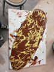
- Cut out desired shape and place on a plaster mold. The timing between steps 2 and 3 is crucial. If the slip is still tacky the design will come off on the mold. If the clay is too dry it will crack when placed on the mold.
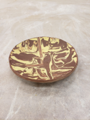
My first attempt of slip marbling, I did not add CMC to the colored slip. This created a less than desirable effect as the two slips weren’t allowed to move together. The colored slip remained on the surface of the black slip due to different densities. The effect for the failed marbling was also done on a kick wheel which created the “starburst” result instead of the standard marbling.
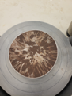
Marbling Glaze (“The Ceramic School”)
This technique takes patience and constant movement. While this form seems easiest, it was also the most unsuccessful after firing. I am sure with some fine tuning and adjustments within the glazes and possibly at a lower temperature (was fired to cone 10) this effect will be more successful in coming trials. It is important to note, again, the importance of the CMC powder in the glazes. The difference in densities creates a separation between the glazes.
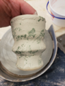
- · White Glaze
- Custer Feldspar 60
- Gerstley Borate 6
- Ball Clay 11
- Whiting 17
- Zinc 5
- Lithium Carb. 1.7
- Zircopax 10
- Bentonite 2
- · Yellow Glaze
- Minspar 40
- Talc 20
- Flint 20
- EPK 10
- Whiting 10
- Titanium Yellow 10
- Add colored glaze to squeeze bottle for application.
- Dip bisque ware into white glaze. Drizzle colored glaze onto white glaze and rotate, allowing glazes to flow creating marbled effect.
- Continue rotating, as it can take the glaze quite some time to dry and a stop in motion can cause flaws within the effect.
As stated above, my before and after of this application proved to be unsuccessful. The glazes seem to have run together instead of maintaining the effect of the before product during the firing. The yellow also changed into a grey glaze (stain is TITANIUM yellow) with yellow and red mottling, which was unexpected.
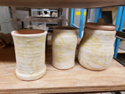 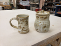 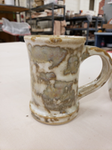
The aesthetic of marble has been a long-standing tradition within the artist community for thousands of years and has had lasting effects on various media throughout history. From the paper marbling of ancient Japan to trends of modern day, we can see the evolution of marbling through the change in patterning, the methodology in application, and the media it adorns.